직업상담사-2급 (2011-08-21 기출문제)
1과목: 직업상담학
1. 직업상담 초기 접수면접에서 이루어지는 주된 내용은?
- 행동수정
- 리허설
- 내담자 심리평가
- 내담자와 상담자간의 상담관계형성
(정답률: 90%)

2. 직업상담이론과 그 특징을 틀리게 짝지은 것은?
- 교류분석적 상담 - 성격 자아상태 분석
- 내담자중심 상담 - 비지시적 상담
- Adler의 개인주의 상담 - 심리성적 결정론
- 형태주의 상담 - Perls에 의한 발전
(정답률: 74%)
3. 직업상담의 상담목표 설정에 관한 설명으로 가장 적합한 것은?
- 상담목표 설정은 상담전략 및 개입의 선택과 관련이 없다.
- 하위목표들을 명확히 하여 가능한 구체적으로 설정되어야 한다.
- 내담자 기대나 가치와 어긋나더라도 상담자의 전문가적인 식견에 따라 설정되어야 한다.
- 현실적이기보다 가능한 궁극적인 변화를 가져올 수 있는 원대한 목표이어야 한다.
(정답률: 84%)
4. 다음은 상담 초기단계에서 중요하게 이루어지는 작업들이다 무엇에 관한 것인가?
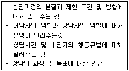
- 상담의 구조화
- 라포 형성
- 접수면접 과정
- 상담의 종결과정
(정답률: 86%)
5. Levinson의 발달이론에 대한 설명으로 틀린 것은?
- 초기 성인변화 단계는 성인기로 변화하기 위한 단계를 의미하며 연령은 17~22세까지 이다.
- 초기 성인세계 단계는 22~28세까지의 단계로서 성인 생활양식을 형성하는 시기이다.
- 중기 성인단계는 초기 성인단계가 완성되며 안정되는 시기로서 40~44세까지의 연령에 해당한다.
- 중년기 마감단계는 55~60세까지의 단계로 중년기가 완성되는 단계이다.
(정답률: 72%)
6. 다음 중 생애진로 사정에 관한 설명으로 틀린 것은?
- 생애진로 사정은 Adler의 개인 심리학에 이론적 기초를 두고 있다.
- 생애진로사정의 구조는 진로사정, 전형적인 하루, 강점과 장애 및 요약으로 이루어진다.
- 생애진로사정은 직업상담의 마무리 단계로서 최종 결론을 도출하기 위한 시도이다.
- 생애진로사정은 구조화된 면담기술로서 짧은 시간에 체계적인 정보를 수집할 수 있다.
(정답률: 83%)
7. 특성-요인 직업상담에서 윌리암슨(Williamson)이 검사의 해석단계에서 이용할 수 있다고 제시한 상담기법이 아닌 것은?
- 직접충고
- 해석
- 설득
- 설명
(정답률: 54%)
8. 행동주의 직업상담에서 불안을 감소시키기 위해 내담자에게 어떠한 추가적 강화 없이 충분히 불안을 일으킬 만한 단서를 반복적으로 제시함으로써 결국 불안반응을 제거하는 기법은?
- 체계적 둔감법
- 변별학습
- 금지적 조건형성
- 역조건 형성
(정답률: 39%)
9. 진로선택과 관련된 이론으로 인생초기의 발달 과정을 중시하는 이론은?
- 인지적 정보처리 이론
- 정신분석이론
- 사회학습이론
- 발달이론
(정답률: 76%)
10. 어떤 일정한 규칙에 따라 대상이나 사건에 수치를 할당하는 과정은?
- 표준화
- 평가
- 측정
- 척도
(정답률: 51%)
11. 포괄적 직업상담 프로그램은 여러 직업상담 이론들과 일반상담 이론들이 갖는 장점들을 서로 절충하고 단점들을 보완하여 일관성 있는 체계로 통합시키기 위하여 Crites가 제안한 프로그램이다. 이 포괄절 직업상담 프로그램의 문제점은?
- 직업결정 문제의 원인으로 불안에 대한 이해와 불안을 규명하는 방법이 결여되어 있다
- 직업상담의 문제 중 진학상담과 취업상담에 적합할 뿐 취업 후 직업적응 문제들을 깊이 있게 다루지 못하고 있다
- 직업선택에 미치는 내적 요인의 영향을 지나치게 강조한 나머지 외적 요인의 영향에 대해서는 충분하게 고려하고 있지 못하다
- 직업상담사가 교훈적 역할이나 내담자의 자아를 명료화 하고 자아실현을 시킬 수 있는 적극적 태도를 취하지 않는다면 내담자에게 직업에 대한 정보를 효과적으로 알려줄 수 없다.
(정답률: 78%)
12. 직업상담기법 중 진로선택을 일종의 문제해결 활동으로 보는 이론은?
- 정신분석이론
- 인지적 정보처리 이론
- 욕구이론
- 성격이론
(정답률: 72%)
13. 정신분석적 상담이론에서 다음 내용에 해당되는 것은?
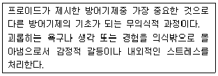
- 억압
- 부인
- 전치
- 억제
(정답률: 65%)
14. 다음중 윌리암슨이 분류한 진로선택의 문제에 해당하지 않는 것은?
- 직업선택의 확신부족
- 현명하지 못한 직업선택
- 가치와 흥미의 불일치
- 직업 무선택
(정답률: 67%)
15. 6개의 생각하는 모자(Six Thinking Hats)기법에서는 내담자에게 6가지 색깔의 생각하는 모자를 써보고 각각의 모자의 색에 해당하는 역할을 수행하게 한다. 다음 중 6개의 생각하는 모자 색깔에 해당하지 않는 것은?
- 갈색
- 백색
- 청색
- 흑색
(정답률: 86%)
16. 직업상담사의 역할과 가장 거리가 먼 것은?
- 직업정보의 수집 및 분석
- 직업관련 이론의 개발 및 강의
- 직업관련 심리검사의 실시 및 해석
- 구인, 구직, 직업적응, 경력개발 등 직업관련 상담
(정답률: 82%)
17. 다음은 내담자의 무엇을 사정하기 위한 것인가?
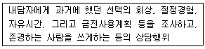
- 내담자의 동기
- 내담자의 역할관계
- 내담자의 가치
- 내담자의 흥미
(정답률: 76%)
18. 직업상담사의 윤리강령에 대한 설명으로 틀린 것은?
- 상담자는 상담에 대한 이론적, 경험적 훈련과 지식을 갖춘 것을 전제로 한다.
- 상담자는 내담자의 성장, 촉진과 문제 해결 및 방안을 위해 시간과 노력상의 최선을 다한다.
- 상담자는 자신의 능력 및 기법의 한계에도 불구하고 최선을 다하여 내담자를 끝까지 책임을 지도록 한다
- 상담자는 내담자가 이해, 수용할 수 있는 한도내에서 기법을 활용한다.
(정답률: 84%)
19. 일반적으로 상담자가 갖추어야 할 기법 중 내담자가 전달하려는 내용에서 한 걸음 더 나아가 그 내면적 감정에 대해 반영하는 것은?
- 해석
- 공감
- 명료화
- 직면
(정답률: 80%)
20. 다음 중 사이버 직업상담의 장점과 가장 거리가 먼 것은?
- 개인의 지위, 연령, 신분, 권력 등을 짐작할 수 있는 사회적 단서가 제공되지 않으므로 전달되는 내용 자체에 많은 주의를 기울이고 의미를 부여할 수 있다.
- 내담자의 자발적 참여로 상담이 진행되는 경우가 대면 상담에 비해 압도적으로 많으므로 내담자들이 문제해결에 대한 동기가 높다고 할 수 있다.
- 내담자 자신의 정보를 선택적으로 공개할 수도 있으며 원하지 않으면 언제든지 상담을 중지해 버릴 수도 있어 매우 편리하다.
- 상담자와 직접 얼굴을 마주하지 않기 때문에 자신의 행동이나 감정에 대한 즉각적인 판단이나 비판을 염려하지 않아도 된다.
(정답률: 74%)
2과목: 직업심리학
21. 규준은 검사 점수 해석에 필요한 기준이 되는 자료이다. 다음 중 집단 내 규준에 해당하지 않는 것은?
- 백분위 점수
- 표준등급
- 학년점수
- 편차IQ
(정답률: 57%)
22. 다음중 비표준화 검사와 비교할 때 표준화 검사의 특징과 가장 거리가 먼 것은?
- 검사의 실시와 채점이 객관적이다.
- 체계적 오차는 있어도 무선적 오차는 없다.
- 신뢰도와 타당도가 비교적 높다.
- 규준집단에 비교해서 피검사자의 상대적 위치를 알 수 있다.
(정답률: 73%)
23. 다음 직무평가의 방법 중 분류법 (Classification Method)장점에 해당하는 것은?
- 직무등급을 신속하게 매길 수 있다.
- 비교적 용이하게 직무의 상대적 가치를 구분할 수 있다
- 다른 직무와의 요소비교를 통한 평가가 용이하며 신뢰성이 확보되어 있다
- 직무내용이 충분히 표준화되어있지 않은 직무의 경우에도 비교적 용이하게 평가할 수 있다.
(정답률: 44%)
24. 다음 사례에서 A군은 Ginzberg의 발달이론의 단계 중 어디에 해당하는가?
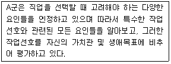
- 가치단계
- 전환단계
- 구체화 단계
- 특수화단계
(정답률: 42%)
25. 강화이론에서 제시한 강화계획(Reinforcement Schedule) 중 불규칙한 횟수의 바람직한 행동 후 강화요인을 제공하는 것은?
- 계속적 강화
- 고정간격강화
- 변동간격 강화
- 변동비율 강화
(정답률: 51%)
26. 좋아하는 직무의무와 싫어하는 직무의무는 각각 그들의 욕구와 일치하거나 일치하지 않는다고 주장한 학자는?
- 카르네스(Carnes)
- 울프(Wolf)
- 랜디스(Landis)
- 월쉬(Walsh)
(정답률: 45%)
27. 한 연구자가 검사를 개발한 후 요인분석을 통해 검사개발의 토대가 된 이론을 그 검사가 잘 반영하는지를 확인하였다. 이 과정은 무엇을 확인하기 위한 것인가?
- 수렴타당도
- 변별타당도
- 준거타당도
- 구성타당도
(정답률: 64%)
28. 다음 중 직업의식의 범위 내에 포함되지 않는 항목은?
- 직업에 대한 가치
- 직업에 대한 태도
- 직업에 대한 의견
- 직업에 대한 출신성분
(정답률: 81%)
29. 진로교육을 실시하기 위한 지도단계를 바르게 나열한 것은?
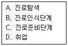
- A→ B→ C→ D
- B→ A→ C→ D
- B→ C→ A→ D
- A→ C→ B→ D
(정답률: 66%)
30. 다운사이징 시대의 경력개발 방향으로 틀린 것은?
- 조직구조의 수평화로 개인의 자율권 신장과 능력개발에 초점을 두어야한다.
- 기술, 제품, 개인의 숙련주기가 짧아져서 경력개발은 단기, 연속, 학습단계로 이어진다.
- 일시적이 아니라 계속적이고 평생학습으로의 경력개발이 요구된다.
- 경력변화의 기회가 많아져서 조직 내 수직적 이동과 장기교용이 용이해진다
(정답률: 70%)
31. 진로성숙검사(CMI)중 태도척도의 하위영역과 문항의 예가 잘못 연결된 것은?
- 결정성 - 나는 선호하는 진로를 자주 바꾸고 있다.
- 참여도- 나는 졸업할 때까지는 진로선택 문제에 별로 신경을 쓰지 않을 것이다
- 타협성- 나는 하고 싶기는 하나 할 수 없는 일을 생각하느라 시간을 보내곤 한다.
- 독립성- 일하는 것이 무엇인지에 대해 생각한 바가 거의 없다
(정답률: 59%)
32. 진로이론에 관한 설명이 옳은 것만으로 짝지어진 것은?(보기 지문의 B, C 항목이 정확하지 않습니다. 정확한 내용을 아시는분 께서는 오류 신고를 통하여 내용 작성 부탁 드립니다. 정답은 1번입니다.)
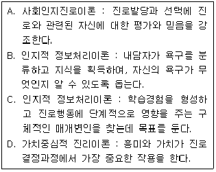
- A, B
- A, C
- B, C
- C, D
(정답률: 74%)
33. Lofquist와 Dawis의 직업적응이론에서 직업성격적 측면의 성격양식 차원에 대한 설명으로 틀린 것은?
- 민첩성- 정확성 보다는 속도를 중시한다.
- 역량- 근로자의 평균활동수준을 의미한다.
- 리듬- 활동에 대한 단일성을 의미한다.
- 지구력- 다양한 활동수준의 기간을 의미한다.
(정답률: 79%)
34. 직무 스트레스에 대한 설명으로 틀린 것은?
- 개인의 책임한계나 직무의 목표가 명료하지 않을 때 스트레스가 높아진다.
- 복잡한 과제는 정보과부하를 일으켜 스트레스를 높인다.
- 공식적이고 구조적인 조직에서는 인간관계가 주요역할갈등을 일으켜 스트레스원이 된다.
- 집합주의/개인주의 산업문화의 충돌은 근로자에게 스트레스원이 된다.
(정답률: 62%)
35. 다음 중 능력검사에 해당하지 않는 것은?
- 적성검사
- 지능검사
- 성취검사
- 흥미검사
(정답률: 55%)
36. Strong 검사에 대한 설명으로 옳은 것은?
- 기본흥미척도(BIS)는 홀랜드의 6가지 유형을 제공한다.
- 스트롱 진로탐색검사는 진로성숙도 검사와 직업흥미검사로 구성되어 있다.
- 업무, 학습, 리더십, 모험심을 알아보는 기본흥미척도가 포함되어 있다.
- 개인특성척도(BSS)는 일반직업분류(GOT)의 하위척도로서 특정흥미분야를 파약하는데 도움이 된다.
(정답률: 57%)
37. Holland의 직업분류체계에서 대표적 직업이 조사연구원, 농부인 유형은?
- 현실형(Realistic)
- 탐구적(Investigative)
- 사회적(Social)
- 관습적(Conventional)
(정답률: 64%)
38. Lazarus의 스트레스 이론에 관한 설명으로 틀린 것은?
- 스트레스 사건 자체보다 지각과 인지 과정을 중시하는 이론이다.
- 1차 평가는 사건이 얼마나 위협적인지를 평가하는 것이다.
- 2차 평가는 자신의 대처 능력에 대한 평가이다.
- 3차 평가는 자신의 스트레스 반응에 대한 평가이다.
(정답률: 67%)
39. 다음 중 특정 직업 활동에 대한 선호를 측정하기 위해 사용되는 흥미 검사가 아닌 것은?
- 스트롱-컴벨검사
- 쿠더식 검사
- 홀랜드의 육감검사
- 수퍼의 CDI 검사
(정답률: 55%)
40. 다음 중 Holland의 직업선택이론에 대한 설명으로 옳은 것은?
- RIE 코드가 RSE 코드보다 일관성이 높다.
- 설득적 유형(Enterprising Type)은 기계, 도구, 동물에 관한 체계적인 조작활동을 좋아하고 사회적 기술이 부족하다.
- 실재적 유형(Realistic Type)에 맞는 대표적인 직업은 공인회계사, 사서, 경리사원등이다.
- 사회적 유형(Social Type)의 성격특징은 표현이 풍부하고 독창적이며 비순응적이다.
(정답률: 76%)
3과목: 직업정보론
41. 한국직업정보시스템에서 제공하는 직업정보 검색 방법 중 ‘조건별 검색’의 2가지 조건에 해당하는 것은?
- 연봉, 전망
- 연봉, 교육수준
- 교육수준, 흥미
- 흥미, 전망
(정답률: 62%)
42. 한국표준산업분류(2008)의 산업분류기준에 해당되지 않는 것은?
- 투입물의 특성
- 생산활동의 일반적인 결합상태
- 생산된 재화 또는 제공된 서비스의 특성
- 생산단위가 수행하는 산업활동의 차별성
(정답률: 67%)
43. 한국고용정보원에서 발간하는 ‘직업선택을 위한 학과정보(2011)에 수록된 학과별 취업률과 졸업자 수의 통계를 제공하는 기관은?
- 한국직업능력 개발원
- 한국교육과정 평가원
- 한국교육개발원
- 한국연구제단
(정답률: 38%)
44. 한국표준직업분류(2007)의 대분류와 해당 직능수준의 연결이 틀린 것은?(관련 규정 개정전 문제로 여기서는 기존 정답인 4번을 누르면 정답 처리됩니다. 자세한 내용은 해설을 참고하세요.)
- 관리자 - 제4직능 수준 혹은 제 3직능수준 필요
- 사무종사자 - 제2직능수준 필요
- 기능원 및 관련기능 종사자 - 제2직능수준 필요
- 군인 - 제2직능수준 필요
(정답률: 72%)
45. 민간직업정보와 비교하여 공공직업정보의 특성에 관한 설명으로 틀린 것은?
- 필요한 시기에 최대한 활용되도록 한시적으로 신속하게 생산 및 운영된다.
- 광범위한 이용가능성에 따라 공공직업정보체계에 대한 직접적이며 객관적인 평가가 가능하다
- 특정 분야 및 대상에 국한되지 않고 전체 사업 및 업종에 걸친 직종 등을 대상으로 한다
- 직업별로 특정한 정보만을 강조하지 않고 보편적인 항목으로 이루어진 기초적인 직업정보체계로 구성되어있다.
(정답률: 72%)
46. 워크넷에서 제공하는 선호직종임금정보가 아닌 것은?(관련 규정 개정전 문제로 여기서는 기존 정답인 1번을 누르면 정답 처리됩니다. 자세한 내용은 해설을 참고하세요.)
- 지역별 선호직종임금
- 고령자 선호직종임금
- 장애인선호직종임금
- 학력별 선호직종임금
(정답률: 63%)
47. 직업상담시 제공하는 직업정보의 기능과 역할에 대한 설명으로 틀린 것은?
- 여러 가지 직업적 대안들을 명료하게 한다.
- 내담자의 흥미, 적성, 가치 등을 파악할 수 있다.
- 경험이 부족한 내담자에게 다양한 직업들을 간접적으로 접할 기회를 제공한다.
- 내담자가 자신의 선택이 현실에 비추어 부적당한 선택이었는지를 점검하고 재조정해 볼 수 있는 기초를 제공한다.
(정답률: 55%)
48. 워크넷 구인, 구직 및 취업 동향에서 사용하는 구인배율의 정의로 옳은 것은?
- (신규구인인원 /신규구직자수) × 100
- (유효구인인원/유효구직자수) × 100
- 신규구인인원 / 신규구직자수
- 유효구인인원 / 유효구직자수
(정답률: 52%)
49. 한국 표준산업분류(2008)의 산업결정방법에 관한 설명으로 틀린 것은?
- 생산단위의 산업활동은 그 생산단위가 수행하는 주된 산업활동의 종류에 따라 결정된다.
- 계절에 따라 정기적으로 산업을 달리하는 사업체의 경우에는 조사 시점의 경영하는 산업에 의해 결정된다.
- 휴업 또는 자산을 청산중인 사업체의 산업은 영업 중 또는 청산을 시작하기 전의 산업활동에 의해 결정된다.
- 설립중인 사업체의 산업은 개시하는 산업활동에 따라 결정한다.
(정답률: 73%)
50. 다음 중 실기능력이 중요하여 필기시험이 면제되는 국가기술자격 기능사 종목이 아닌 것은?
- 조적기능사
- 건축도장기능사
- 도배기능사
- 미용사(피부)
(정답률: 74%)
51. 적업정보 시스템의 일반적인 정보관리 순서를 바르게 나열한 것은?
- 수집→분석→가공→체계화→제공→평가
- 수집→가공→분석→제공→평가→체계화
- 수집→분석→평가→가공→체계화→제공
- 수집→ 분석→체계화→제공→가공→평가
(정답률: 74%)
52. 다음 ( )안에 들어갈 알맞은 것은? (단 ,실무 경력에 의한 경우에 한함)
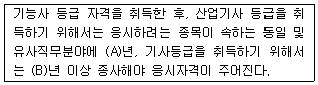
- A-1 B-2
- A-1 B-3
- A-S, B-3
- A-2, B-4
(정답률: 54%)
53. 내일배움카드(직업능력개발계좌제)에 대한 설명으로 틀린 것은?(관련 규정 개정전 문제로 여기서는 기존 정답인 2번을 누르면 정답 처리됩니다. 자세한 내용은 해설을 참고하세요.)
- 1인당 계좌한도는 200만원이며 유효기간은 발급일로부터 1년이다
- 모든 훈련직종에 대해서 훈련비의 80%는 정부가 지원하며 20%는 훈련생이 부담한다.
- 수료란 소정훈련일수의 80%이상을 출석한 것을 말한다.
- 교통비는 한달에 최대 50,000원까지 지원할 수 있다.
(정답률: 64%)
54. 다음 중 한국표준직업분류(2007)와 국제표준직업분류 (ISCO-08)의 동일한 대분류 항목은?
- 관리자
- 전문가 및 관련종사자
- 사무종사자
- 서비스 종사자
(정답률: 36%)
55. 다음 고용안정사업 지원금 중 그 성격이 다른 하나는?
- 고용유지지원금
- 전직지원장려금
- 교대제전환지원금
- 재고용장려금
(정답률: 46%)
56. 한국직업정보시스템에서 제공하지 않는 서비스는?
- 이색적인 직업소개
- 현직자 인터뷰자료
- 이색학과에 관한정보
- 직업심리검사
(정답률: 48%)
57. 한국고용정보원에서 제공하는 “워크넷 구인 · 구직 및 취업동향”에 관한 설명으로 틀린 것은?
- 수록된 통계는 전국 고용지원센터, 한국산업인력공단, 시 · 군 · 구 등에서 입력한 자료를 워크넷 DB로 집계한 것이다.
- 공공고용안정기관의 취업지원 서비스를 통해 산출되는 구인 · 구직 통계를 제공하여, 취업지원사업 등의 국가고용정책사업 수행을 위한 기초자료를 제공하는데 목적이 있다.
- 통계표에 수록된 단위가 반올림되어 표기되어 전체 수치와 표내의 합계가 일치하지 않을 수 있다
- 워크넷을 이용한 구인 · 구직자들만을 대상으로 하므로, 통계자료가 노동시장 전체의 수급상황과 일치한다.
(정답률: 72%)
58. 한국직업사전 (2011)의 부가직업정보 중 숙련기간의 수준과 숙련기간이 바르게 짝지어진 것은?
- 수준 2: 시범 후 30일 이하
- 수준 5: 3개월 초과 – 6개월 이하
- 수준 7: 1년 초과 – 2년 이하
- 수준 9: 4년 초과 – 10년 이하
(정답률: 48%)
59. 한국표준산업분류(2008)의 통계단위는 생산활동과 장소의 동질성의 차이에 따라 다음과 같이 구분된다. ( )안에 들어갈 가장 알맞은 것은?
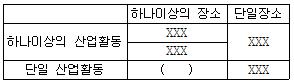
- 기업집단
- 지역단위
- 기업체단위
- 활동유형단위
(정답률: 73%)
60. 한국직업사전의 직무정보에 관한 설명으로 틀린 것은?
- 직업코드는 특정 직업을 구분해 주는 단위로서 한국표준직업분류 체계를 기준으로 3자리 숫자로 표기한다.
- 본 직업명칭은 산업현장에서 일반적으로 알려진 명칭, 혹은 그 직무에 통상적으로 호칭되는 명칭이다
- 직무개요에는 직무담당자의 활동, 직무담당자가 사용하는 기계, 설비 및 작업보조물 등을 포함한다.
- 수행직무는 직무담당자가 직무의 목적을 완수하기 위하여 수행하는 구체적인 작업 내용을 순서에 따라 서술한 것이다.
(정답률: 62%)
4과목: 노동시장론
61. 해고에 대한 사전 예고와 통보가 실업을 감소시킬 수 있는 실업의 유형을 모두 짝지은 것은?
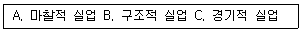
- A, B
- A, C
- B, C
- A, B, C
(정답률: 66%)
62. 노동조합의 임금효과에 관한 설명으로 틀린 것은?
- 노동조합 조직부문과 비조직부문간의 임금격차는 불경기시에 감소한다.
- 노동조합 조직부문에서 해고된 근로자들이 비조직부문에 몰려 비조직부문의 임금을 떨어뜨릴 수 있다
- 노동조합이 조직될 것을 우려하여 비조직부문 기업이 이전보다 임금을 더 많이 인상시킬 수 있다.
- 노조조직부문에 입사하기 위해 비조직부문 근로자들이 사직하는 경우가 많아 비조직부문의 임금이 상승할 수 있다.
(정답률: 64%)
63. 다음은 힉스의 교섭모형과 기대파업기간에 대한 그림이다 이에 대한 설명으로 틀린 것은?
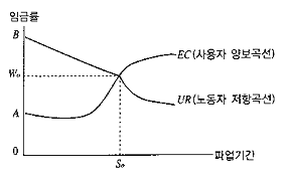
- 임금률 A점은 노동조합이 없거나 노동조합이 파업을 하기 이전 사용자들이 지불하려고 하는 임금수준이다.
- B점에서 우하향의 곡선은 노동조합의 저항곡선이다
- 만약 노동조합이 0W0보다 더 놓은 임금을 요구하면 사용자는 쉽게 수락하겠지만, 그때는 노동조합 내부에서 교섭대표자들과 일반조합원간의 마찰이 불가피하다고 하였다
- 힉스의 모형은 단체교섭과정에서의 불확실성을 지나치게 경시하였다는 비판을 받게 되었다.
(정답률: 72%)
64. 노동 수요 측면에서 비정규직 증가의 원인과 가장 거리가 먼 것은?
- 세계화에 따른 기업간 경쟁 환경의 변화
- 노동조합운동에 대한 기업의 대항
- 고학력 취업자의 증가
- 정규노동자 고용비용의 증가
(정답률: 64%)
65. 최저임금제도의 기본목적과 가장 거리가 먼 것은?
- 소득분배의 개선
- 공정경쟁의 확보
- 산업평화의 유지
- 실업의 해소
(정답률: 66%)
66. 던롭이 노사관계를 규제하는 여건 혹은 환경으로 지적한 사항이 아닌 것은?
- 시민의식
- 기술적 특성
- 시장 또는 예산제약
- 각 주체의 세력관계
(정답률: 67%)
67. 노동의 준고정비용(Quasi-Fixed Cost)의 증가가 기업의 고용수준과 소속근로자의 초과근로시간에 미치는 효과는?
- 고용수준은 증가하지만 초과근로시간은 감소한다.
- 고용수준은 감소하지만 초과근로시간은 증가한다.
- 고용수준과 초과근로시간 모두 증가한다.
- 고용수준과 초과근로시간 모두 감소한다.
(정답률: 60%)
68. 다음 중 연봉제의 장점과 가장 거리가 먼 것은?
- 전문성의 촉진
- 개인의 능력에 기초한 생산성 향상
- 구성원 상호간의 친밀감 증진
- 임금 관리 용이
(정답률: 64%)
69. 다음 중 실업률을 낮추기 위한 대책과 가장 거리가 먼 것은?
- 적절한 직업훈련 기회의 제공
- 최저임금 수준의 상향 조정
- 정책적 공공사업 실시
- 구인 · 구직정보의 적절한 제공
(정답률: 64%)
70. 다음 ( ) 안에 들어갈 알맞은 것은?
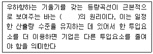
- 대체
- 상쇄
- 보완
- 교차
(정답률: 70%)
71. 다음 ( )안에 들어갈 알맞은 것은?
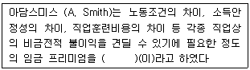
- 직종별 임금격차
- 균등화 임금격차
- 생산성임금
- 헤도닉 임금
(정답률: 54%)
72. 기업이 노동자를 채용할 때는 노동조합에 가입하지 않은 노동자를 채용할 수 있지만 일단 채용된 노동자는 일정 기간 내에 노동조합에 가입하여야 하며 또한 조합에서 탈퇴하거나 제명되는 경우 종업원 자격을 상실하도록 되어 있는 제도는?
- 클로즈드숍
- 오픈숍
- 에이전시숍
- 유니온숍
(정답률: 67%)
73. 인적자본이론에 관한 설명으로 틀린 것은?
- 능력이 높은 사람일수록 인적자본투자를 더한다.
- 부모가 부자일수록 자녀의 인적자본투자가 많아진다.
- 교육과 훈련이 생산성 증대를 가져온다는 점이 실증적으로 입증되었다
- 실물자본에 비해 인적자본투자를 위하여 조달되어야 하는 자금의 확보에 어려움이 있다.
(정답률: 61%)
74. 일국(一國)의 경제에서 최적 인적자원배분이 이루어 졌다고 하는 때는 언제인가?
- 동일노동에 대해 동일임금이 지급될 때
- 완전고용을 이루었을 때
- 자연실업률 상태에 도달하였을 때
- 경제원칙이 달성되었을 때
(정답률: 63%)
75. 다음 중 경기침체 시 실업률이 높아질 때 경제활동인구를 감소시키는 효과는?
- 실망노동자 효과
- 부가노동자효과
- 구축효과
- 대기실업효과
(정답률: 71%)
76. 다음 중 마찰적 실업에 관한 설명으로 옳은 것은?
- 마찰적 실업은 경기침체로부터 오는 실업이다
- 마찰적 실업의 원인은 구인자와 구직자간의 정보의 불일치로 인해 발생한다.
- 마찰적 실업은 기업이 요구하는 기술수준과 노동자가 공급하는 기술수준의 불합치에 의해 발생한다.
- 마찰적 실업은 정부와 기업 간의 마찰로 인해 발생한다.
(정답률: 74%)
77. 근로자의 구직활동에 관한 설명으로 틀린 것은?
- 탐색기간이 길어질수록 탐색비용은 감소한다.
- 탐색기간이 길어질수록 좋은 일자리를 찾게 될 확률이 높아진다.
- 직업탐색활동은 노동시장 정보의 불완전성에 기인한다.
- 직업에 관련된 정보를 얻는데 소요된 지출도 인적자본 투자의 한 형태이다.
(정답률: 59%)
78. 다음 중 노동수요 탄력성의 크기에 영향을 미치는 요인과 가장 거리가 먼 것은?
- 생산물 수요의 가격탄력성 크기
- 총비용에서 노동이 차지하는 비중
- 다른 생산요소로의 대체용이성
- 대체생산요소의 수요탄력성
(정답률: 54%)
79. 다음 중 노조조직 확대에 가장 도움이 되는 숍 제도는?
- 클로즈드숍
- 유니언숍
- 오픈숍
- 에이전시숍
(정답률: 63%)
80. 다음 중 고정급제 임금형태가 아닌 것은?
- 시급제
- 연봉제
- 성과급제
- 월급제
(정답률: 74%)
5과목: 노동관계법규
81. 근로기준법상 재해보상에 관한 설명으로 틀린것은?
- 근로자가 업무상 부상 또는 질병에 걸리면 사용자는 그 비용으로 필요한 요양을 행하거나 필요한 요양비를 부담하여야 한다.
- 근로자가 업무상 사망한 경우에는 사용자는 근로자가 사망한 후 지체 없이 그 유족에게 평균임금 100일분의 유족보상을 하여야 한다.
- 요양보상을 받는 근로자가 요양을 시작한 지 2년이 지나도 부상 또는 질병이 완치되지 아니하는 경우에는 사용자는 그 근로자에게 평균임금 1,340일분의 일시보상을 하여 그 후의 동법에 따른 모든 보상책임을 면할 수 있다.
- 사용자는 지급 능력이 있는 것을 증명하고 보상을 받는 자의 동의를 받으면 유족보상금을 1년에 걸쳐 분할보상을 할 수 있다.
(정답률: 62%)
82. 근로기준법상 취업규칙에 관한 설명으로 틀린 것은?
- 상시 10명 이상의 근로자를 사용하는 사용자는 취업규칙을 작성하여 고용노동부장관에게 신고하여야 한다.
- 사용자는 취업규칙의 작성 또는 변경에 관하여 원칙적으로 해당사업 또는 사업장에 근로자의 과반수로 조직된 노동조합이 있는 경우에는 그 노동조합, 근로자의 과반수로 조직된 노동조합이 없는 경우에는 근로자의 과반수의 동의를 받아야 한다.
- 취업규칙에서 근로자에 대하여 감급의 제재를 정할 경우에 그 감액은 1회의 금액이 평균임금의 1일분의 2분의 1을, 총액이 1임금지급기의 임금 총액의 10분의 1을 초과하지 못한다.
- 취업규칙은 해당 사업 또는 사업장에 대하여 적용되는 단체협약과 어긋나서는 아니 되며, 고용노동부장관은 법령이나 단체협약에 어긋나는 취업규칙의 변경을 명할 수 있다.
(정답률: 50%)
83. 다음 중 근로3권의 제한 및 한계에 관한 설명으로 틀린 것은?
- 근로3권은 어떠한 경우에도 제한할 수 없는 절대적인 권리이다.
- 현역군인 · 경찰관 등에게 근로3권을 인정하지 않는 것은 헌법위반이라고 볼 수 없다.
- 근로3권을 제한하는 경우 근로3권의 전면적 부인이나 본질적 내용의 침해는 인정될 수 없다.
- 근로3권은 국가의 안전보장 · 질서유지 · 공공복리를 위하여 필요한 경우에 한하여 법률로써 제한할 수 있다.
(정답률: 65%)
84. 다음 ( )안에 들어갈 알맞은 것은?
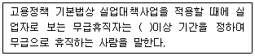
- 6개월
- 9개월
- 12개월
- 15개월
(정답률: 69%)
85. 남녀고용평등과 일·가정 양립지원에 관한 법률상 상시 5명 미만의 근로자를 사용하는 사업장에도 반드시 적용되어야 하는 것은?(관련 규정 개정전 문제로 여기서는 기존 정답인 1번을 누르면 정답 처리됩니다. 자세한 내용은 해설을 참고하세요.)
- 모집과 채용에 있어서의 남녀차별금지
- 동일가치노동에 대한 동일임금지급
- 교육 · 배치 · 승진에 있어서 남녀차별금지
- 정년 · 퇴직 · 해고에 있어서의 남녀차별금지
(정답률: 65%)
86. 고용보험법상 심사 및 재심사의 청구에 관한 설명으로 틀린 것은?
- 피보험자격의 취득 · 상실에 대한 확인 등에 이의가 있는 자는 고용보험심사관에게 심사를 청구할 수 있고, 그 결정에 이의가 있는 자는 고용보험심사위원회에 재심사를 청구할 수 있다.
- 심사청구인은 법정대리인 외에 변호사나 공인노무사를 대리인으로 선임할 수 있다.
- 고용보험심사관은 심사의 청구에 대한 심리를 마쳤을 때에는 원처분등의 전부 또는 일부를 취소하거나 심사청구의 전부 또는 일부를 기각한다.
- 결정의 효력은 심사청구인 및 직업안정기관의 장이 결정서의 정본을 받는 날부터 발생하며 결정은 원처분등을 행한 직업안정기관의 장을 기속한다.
(정답률: 57%)
87. 남녀고용평등과 일, 가정 양립지원에 관한 법률상 직장 내 성희롱에 관한 설명으로 틀린 것은?(오류 신고가 접수된 문제입니다. 반드시 정답과 해설을 확인하시기 바랍니다.)
- 사업주는 직장 내 성희롱 예방을 위한 교육을 연 1회 이상 하여야 한다.
- 직장 내 성희롱 예방 교육은 사업의 규모나 특성 등을 고려하여 직업연수. 조회. 회의. 회의, 인터넷 등 정보통신망을 이용한 사이버 교육 등을 통하여 실시할 수 있다
- 상시 10명 미만의 근로자를 고용하는 사업의 사업주는 홍보물을 게시하거나 배포하는 방법으로 직장 내 성희롱 예방교육을 할 수 있다.
- 사업주는 고객 등 업무와 밀접한 관련이 있는 자가 업무수행 과정에서 성적인 언동 등을 통하여 근로자에게 성적 굴욕감 또는 혐오감 등을 느끼게 하여 해당 근로자가 그로 인한 고충 해소를 요청할 경우 배치전환등의 조치를 취해야 한다.
(정답률: 51%)
88. 근로자직업능력개발법상 직업능력기발훈련을 받는 근로자가 훈련 중에 그 훈련으로 인하여 재해를 입은 경우 지급받는 재해 위로금에 관한 설명으로 틀린 것은?
- ‘산업재해보상보험법’의 적용을 받는 사람은 제외된다.
- 재해 위로금의 지급에 관하여는 휴업보상을 제외한 ‘근로기준법’을 준용한다.
- 위탁에 의한 직업능력개발훈련을 받는 근로자에 대하여는 위탁받은 자의 훈련시설의 결함으로 인하여 재해가 발생한 경우라도 위탁자가 재해 위로금을 지급하여야 한다.
- 재해 위로금의 산정기준이 되는 평균임금은 ‘산업재해보상보험법’에 따라 고용노동부장관이 매년 정하여 고시하는 최고 보상기준 금액 및 최저 보상기준 금액을 각각 그 상한 및 하한으로 한다.
(정답률: 53%)
89. 고용상 연령차별금지 및 고령자고용촉진에 관한 법률상 고령자 인재은행으로 지정된 직업안정법에 따른 무료직업소개사업을 하는 비영리 법인의 사업범위에 해당하지 않는 것은?
- 고령자의 직업능력개발 훈련
- 고령자에 대한 구인 · 구직 등록
- 고령자에 대한 직업지도 및 취업알선
- 취업희망 고령자에 대한 직업상담 및 정년퇴직자의 재취업상담
(정답률: 63%)
90. 고용정책 기본법상 한국잡월드에 관한 설명으로 틀린것은?
- 한국잡월드는 법인으로 한다.
- 한국잡월드는 사업수행에 필요한 경비를 조달하기 위하여 입장료 · 체험관람료 징수 및 광고 등의 수입 사업을 할 수 없다.
- 개인 또는 법인단체는 한국잡월드의 사업을 지원하기 위하여 한국잡월드에 금전이나 현물, 그 밖의 재산을 출연 또는 기부할 수 있다.
- 정부는 한국잡월드의 설립 및 운영을 위하여 필요한 경우에는 ‘국유재산법’, ‘물품관리법’에도 불구하고 국유재산 및 국유물품을 한국잡월드에 무상으로 대부 또는 사용하게 할 수 있다.
(정답률: 69%)
91. 헌법상 근로의 권리 기능이 아닌 것은?
- 근로를 통하여 개성과 자주적 인간성을 제고하고 함양하게 한다.
- 근로의 상품화를 허용함으로써 자본주의경제의 이념적 기초를 제공한다.
- 국민으로 하여금 근로를 통하여 생활의 기본적 수요를 스스로 충족하게 한다.
- 근로기회의 제공을 통하여 생활무능력자에 대한 국가적 보호의무를 증가시킨다.
(정답률: 61%)
92. 남녀고용평등과 일, 가정 양립에 관한 법률상 육아 휴직과 육아기 근로시간 단축의 사용형태로 틀린 것은?(오류 신고가 접수된 문제입니다. 반드시 정답과 해설을 확인하시기 바랍니다.)
- 육아휴직을 11개월 동안 1회사용
- 육아기 근로시간 단축을 5개월씩 2회사용
- 육아휴직을 6개월 동안 1회 사용하고 육아기 근로시간 단축을 3개월 동안 1회사용
- 육아휴직을 3개월 동안 1회 사용하고 육아기 근로시간 단축을 1개월씩 2회사용
(정답률: 59%)
93. 고용상 연령차별금지 및 고령자 고용촉진에 관한 법률상 운수업의 고령자 기준고용률은?
- 그 사업장의 상시 근로자수의 100분의 2
- 그 사업장의 상시근로자수의 100분의 3
- 그 사업장의 상시근로자수의 100분의 5
- 그 사업장의 상시근로자수의 100분의 6
(정답률: 71%)
94. 고용상 연령차별금지 및 고령자 고용촉진에 관한 법률상 고령자 고용촉진 및 고용안정에 관한 설명으로 옳은 것은?
- 상시 300명 이상의 근로자를 사용하는 사업장의 사업주는 기준고용률 이상의 고령자를 고용하여야 한다.
- 기준고용률에 미달하는 고령자를 고용하는 사업주는 매년 고용노동부장관에게 고령자고용부담금을 납부하여야 한다.
- 사업주가 기준고용률을 초과하여 고령자를 추가로 고용하는 경우에는 조세특례제한법으로 정하는 바에 따라 조세를 감면한다.
- 국가 및 지방자치단체, 공공기관의 운영에 관한 법률에 따라 공공기관으로 지정받은 기관의 장은 그 기관의 우선고용직종에 고령자와 준고령자를 우선적으로 고용하도록 노력해야 한다.
(정답률: 51%)
95. 근로자직업능력 개발법령상 직업능력개발훈련의 구분 및 실시방법에 관한 설명으로 옳은 것은?
- 직업능력개발훈련은 훈련의 목적에 따라 현장훈련과 원격훈련으로 구분한다.
- 양성훈련은 근로자에게 작업에 필요한 기초적 직무수행 능력을 습득시키기 위하여 실시하는 직업능력 개발훈련이다.
- 혼합훈련은 전직훈련과 향상훈련을 병행하여 직업능력 개발훈련을 실시하는 방법이다.
- 집체훈련은 산업체의 생산시설 및 근무장소에서 직업능력개발훈련을 실시하는 방법이다.
(정답률: 60%)
96. 직업안정법규상 유료직업소개사업자의 장부비치기간으로 옳은 것은?(오류 신고가 접수된 문제입니다. 반드시 정답과 해설을 확인하시기 바랍니다.)
- 종사자명부 : 3년
- 구인신청서 및 구직신청서 : 2년
- 근로계약서: 2년
- 금전출납부 및 금전출납명세서: 1년
(정답률: 54%)
97. 고용보험법상 피보험기간이 5년이상 10년 미만이고, 이직일 현재 연령이 50세 이상인 경우의 구직급여 소정급여일수는?(관련 규정 개정전 문제로 여기서는 기존 정답인 3번을 누르면 정답 처리됩니다. 자세한 내용은 해설을 참고하세요.)
- 150일
- 180일
- 210일
- 240일
(정답률: 56%)
98. 직업안정법규상 고용노동부장관 또는 특별자치도지사 · 시장 · 군수 · 구청장이 직업소개사업을 하는 자 및 그 종사자에 대하여 실시하는 교육훈련의 교육내용이 아닌 것은?
- 노동경제학 이론
- 직업상담 이론 및 기법
- 고용안정전산망 운용
- 직업소개사업의 사회적 책임
(정답률: 54%)
99. 고용보험법상 취업촉진수당의 종류가 아닌 것은?
- 특별연장급여
- 조기재취업수당
- 광역구직활동비
- 이주비
(정답률: 71%)
100. 근로기준법상 이행강제금에 관한 설명으로 틀린 것은?
- 노동위원회는 구제명령을 받은후 이행기한까지 구제명령을 이행하지 아니한 사용자에게 2천만원 이하의 이행강제금을 부과한다.
- 노동위원회는 최초의 구제명령을 한 날을 기준으로 매년 2회의 범위에서 구제명령이 이행될 때까지 반복하여 이행강제금을 부과. 징수할 수 있으며, 이 경우 이행강제금은 2년을 초과하여 부과. 징수하지 못한다.
- 노동위원회는 구제명령을 받은 자가 구제명령을 이행하면 새로운 이행강제금을 부과하지 아니하고 구제명령을 이행하기 전에 이미 징수된 이행강제금은 환급한다.
- 노동위원회는 이행강제금 납부의무자가 납부기한까지 이행강제금을 내지 아니하면 기간을 정하여 독촉을 하고 지정된 기간에 이행강제금을 내지 아니하면 국세 체납처분의 예에 따라 징수할 수 있다.
(정답률: 60%)